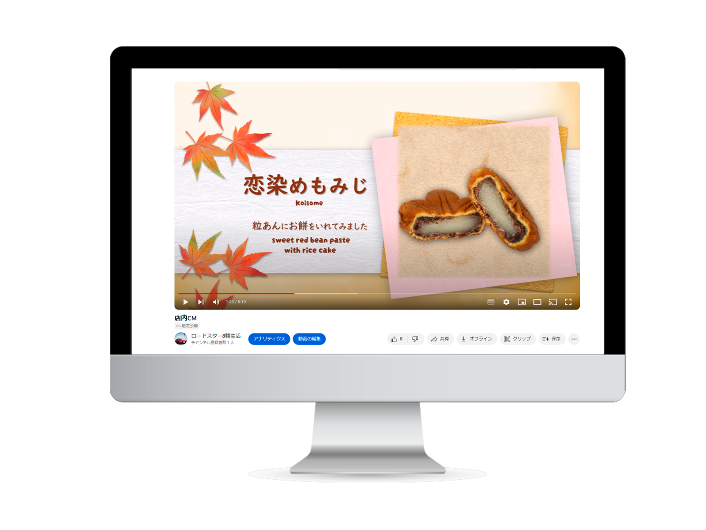

大伸堂 商品紹介
店内CM動画
企画・動画

- 概要
-
広島県廿日市市宮島口駅前にある『大伸堂製菓店』の季節のおすすめとこの冬の新作もみじ饅頭の紹介動画を作成しました。
常時20種類以上あるもみじ饅頭の中で、悩まず快適に選んでいただけるよう作成致しました。
今後店内のモニターで店内ＣＭとして流れる予定です。
動画は現在限定公開です。店内ＣＭ用のため、音声なしで二回動画が繰り返します。
- ターゲット層
-
お店に来ていただいたお客様
初めてお店に来られる外国人観光客の方
- 目的・ゴール
- お客様に新作やおすすめのもみじ饅頭屋を知っていただき、商品を購入して頂く。
- 制作ポイント
-
遠くからでも一目でわかるようもみじ饅頭の周りに原材料をあしらっています。
店内が手作り感あるあたたかい雰囲気のお店なので、優しくてかわいらしい印象をもっていただけるようなデザインにしました。
また、外国人観光客の方向けにも日本らしいフォントで英文を追加しております。
今後季節によって映像を差し替える予定です。
- 使用ツール
- PremirePro / Photoshop / PowerPoint